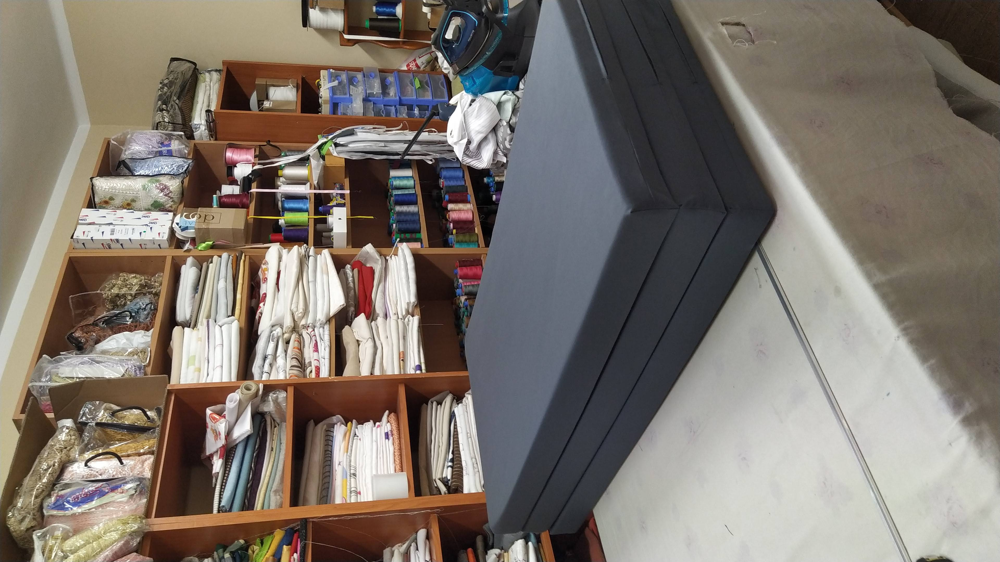

Noticias y Consejos
Publicamos ideas practicas para elegir tejidos, sistemas y acabados con criterio en vivienda, contract y espacios comerciales.
Ultimos articulos
Contenido breve y util para tomar mejores decisiones antes de confeccionar o instalar cualquier solucion textil.

Como elegir cortinas a medida
Repasamos orientacion solar, grado de privacidad, caida y tejidos para que la cortina funcione bien en el uso diario y mantenga una buena presencia con el paso del tiempo.

Paneles y enrollables para grandes huecos
Comparamos soluciones para ventanales amplios cuando se busca equilibrio entre control solar, limpieza visual y manejo comodo en aperturas frecuentes.

Tapicerias resistentes y faciles de vivir
Seleccion de materiales recomendados para sofas, butacas y cabeceros en espacios con uso intensivo, mascotas o necesidad de mantenimiento sencillo.